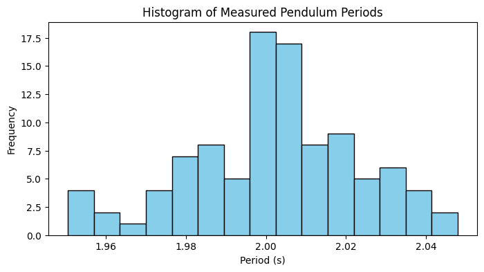
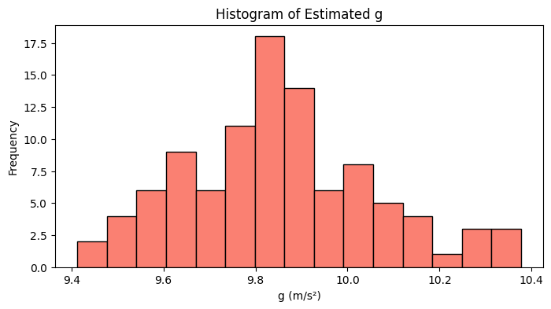
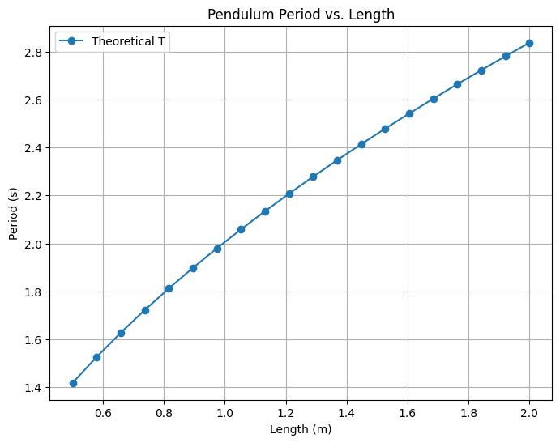

Problem 1
Measuring Earth's Gravitational Acceleration Using a Pendulum
1. Theoretical Foundation
A simple pendulum (of small amplitude) has a period given by:
Where: - \(T\) is the period (time for one complete oscillation), - \(L\) is the length of the pendulum, - \(g\) is the acceleration due to gravity.
Rearranging the formula to solve for \(g\), we obtain:
This relation provides a straightforward method to measure \(g\) by measuring \(L\) and \(T\).
2. Simulation
The following Python code simulates the oscillations of a simple pendulum. It generates synthetic period data (with some random noise to mimic measurement errors) and then uses these periods to estimate \(g\).
import numpy as np
import matplotlib.pyplot as plt
# Pendulum parameters
L = 1.0 # Length in meters
g_true = 9.81 # True gravitational acceleration (m/s²)
T_true = 2 * np.pi * np.sqrt(L / g_true) # Theoretical period
# Generate simulated period data with noise (simulate multiple trials)
num_trials = 100
# Adding normal noise with 0.02 sec standard deviation to mimic experimental error
measured_periods = T_true + np.random.normal(0, 0.02, num_trials)
# Estimate g from each measured period using: g = 4π²L/T²
g_estimates = 4 * np.pi**2 * L / measured_periods**2
# Compute average estimated g and standard deviation
g_mean = np.mean(g_estimates)
g_std = np.std(g_estimates)
print(f"Estimated g: {g_mean:.2f} m/s² ± {g_std:.2f} m/s²")
Estimated g: 9.85 m/s² ± 0.21 m/s²
3. Simulation
A. Histogram of Measured Periods
The histogram below shows the distribution of the measured periods:
plt.figure(figsize=(8, 4))
plt.hist(measured_periods, bins=15, color='skyblue', edgecolor='black')
plt.title("Histogram of Measured Pendulum Periods")
plt.xlabel("Period (s)")
plt.ylabel("Frequency")
plt.show()

B. Histogram of Estimated \(g\) Values
The following plot visualizes how the estimated \(g\) values are distributed:
plt.figure(figsize=(8, 4))
plt.hist(g_estimates, bins=15, color='salmon', edgecolor='black')
plt.title("Histogram of Estimated g")
plt.xlabel("g (m/s²)")
plt.ylabel("Frequency")
plt.show()

C. Period vs. Length Plot
To further verify the theoretical relationship, we can plot the period as a function of pendulum length:
# Simulate for different pendulum lengths
lengths = np.linspace(0.5, 2.0, 20) # Lengths from 0.5 m to 2.0 m
T_values = 2 * np.pi * np.sqrt(lengths / g_true)
plt.figure(figsize=(8, 6))
plt.plot(lengths, T_values, 'o-', label='Theoretical T')
plt.title("Pendulum Period vs. Length")
plt.xlabel("Length (m)")
plt.ylabel("Period (s)")
plt.legend()
plt.grid(True)
plt.show()

4. Analysis and Discussion
Convergence: As the number of trials increases, the average estimated \(g\) converges to the true value (9.81 m/s²). The simulation demonstrates that even with measurement noise, averaging over many trials reduces the error.
Impact of Measurement Noise: Small random errors in \(T\) can lead to variability in the estimated \(g\) due to the quadratic relationship in the formula. However, increasing the sample size reduces the uncertainty.
Assumptions and Limitations:
Small Angle Approximation: The formula \(T = 2\pi \sqrt{\frac{L}{g}}\) assumes small oscillation angles. For larger angles, a correction is needed.
Neglected Factors: Air resistance and friction at the pivot are ignored, which in practice might affect the period slightly.
Practical Applications: Measuring \(g\) accurately is crucial in experimental physics and engineering—for calibrating instruments and understanding gravitational effects on structures. This pendulum method serves as an accessible, low-cost experiment for these purposes.